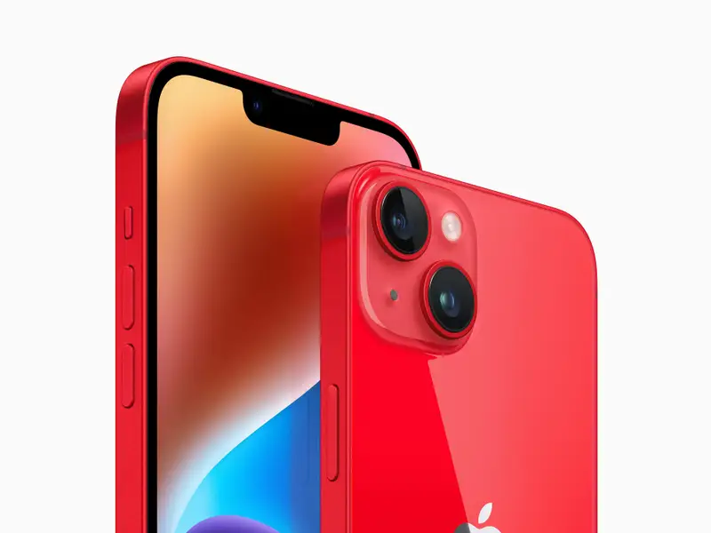

The iPhone 14, Three years later
By Daniel Morrisey, April 7, 2014
How does the iPhone 14 stack up three years later?

Bluesky Adds a new Form of Verification
By Daniel Morrisey, Last Updated: May 27, 2205
You can now fill out a Google Form to send a Request to Bluesky to apply for a Blue Verification check mark.